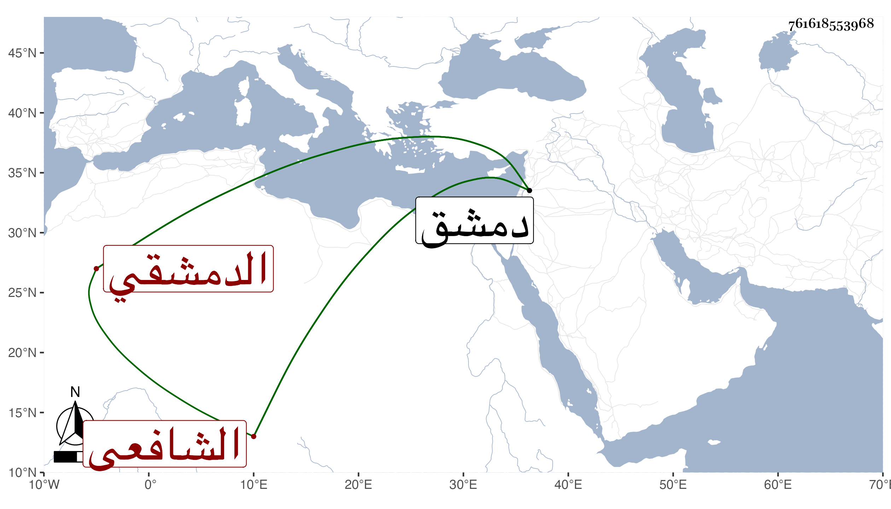

0902Sakhawi.DawLamic.ITO20230111-ara1.EIS1600.761618553968
Biography ID: 761618553968
249
محمد بن أحمد بن ناصر بن خليفة بن فرح بن عبد الله بن عبد الرحمن الشمس بن الشهاب الباعوني الدمشقي الشافعي أخو إبراهيم ويوسف . ولد بدمشق في عشر الثمانين وسبعمائة . ونشأ بها فحفظ القرآن والمنهاج وعرضه على جماعة وأخذ الفقه عن أبيه والشهاب والغزي والشمس الكفيري واشتغل في غيره أيضا وسمع الحديث على الشمس محمد بن محمد بن علي خطاب وعائشة ابنة ابن عبد الهادي وغيرهما وتعاني النظم فاكثر وأتى فيه بالحسن ونظم السيرة النبوية للعلاء مغلطاي وسماه منحة اللبيب في سيرة الحبيب يزيد على ألف بيت وعمل تحفة الظرفاء في تاريخ الملوك والخلفاء وينابيع الأحزان في مجلد عمله بعد موت ولد له وغير ذلك ، وكتب الكثير من كتب الحديث ونحوه بخطه . وخطب بالجامع الناصري بن منجك المعروف بمسجد القصب ، وكذا بجامع دمشق وباشر نظر الأسرى والأسوار وغيرهما مدة ثم انفصل عنها وجمع نفسه على العبادة وحدث بشيء من نظمه وغير ذلك . وممن كتب عنه أبو العباس المجدلي الواعظ بل نقل ابن خطيب الناصرية في تاريخه من نظمه ووصفه بالإمام الفاضل العالم ولقيته بدمشق ، فكتب عنه من نظمه أشياء بل قرأت عليه بعض مروياته وكان مجموعا حسنا . مات في رمضان سنة إحدى وسبعين ودفن عند والده خلف زاوية ابن داود رحمه الله . ومما أنشدنيه في رثاء ولد له مضمنا:
| أمحمدا إن كان قد عز اللقا | ومضت مسرات الحياة بأسرها |
| فلأبكينك ما حييت وإن أمت | فلتبكينك أعظمي في قبرها |
